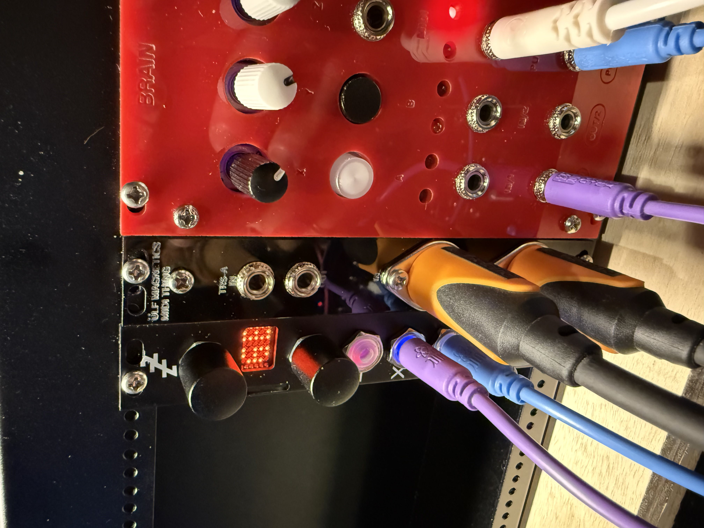

Notes
I designed and built a simple Eurorack module that acts as a MIDI breakout board for the Disting Mk4 from Expert Sleepers. The Disting ships with a header that provides MIDI I/O, but you need a physical breakout board to actually use it. There are a few kits out there but they seem to be sold out, so I thought I'd try building one for myself.
I call it the MIDI Thing because it needs a name and I'm old and boring now and naming things is hard. I'm going to write $up a whole build guide for it in a bit, but in the process of testing it out I made a little demo track that I thought I'd share. The Brain module is generating pseudo-random CV, quantized to a minor scale, and sending it into the Disting's CV-to-MIDI algorithm. The MIDI out port is then sending this into the Prophet.